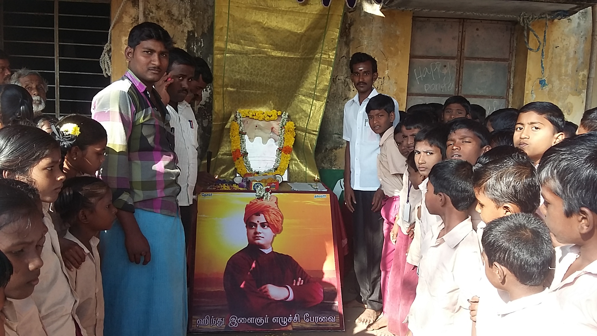

Government and NGO Initiatives

Activities done for the beneficiaries
The following activities have been conducted for the
beneficiaries Farmers awareness program, Training on Organic
Nutritious Home Garden, Tree plantation and Awareness
generation training, Self Help Groups an FPOs formations,
educational support to poor and disable children and carry out
specific programs related to land, Water, Forestry Management

Activities undertaken for SC/ST people
VanDhan Vikas Kendras (VDVKs). Under PM JANMAN
scheme launched by the Ministry of Tribal Affairs, Government
of India, Under the Van Dhan Vikas Yojana, tribal communities
are encouraged to form clusters and take up the processing of
forest produce to increase their value. These clusters are
provided with necessary infrastructure, such as tools and
equipment, and training in value addition and entrepreneurship.
The scheme also provides market linkages to the tribal
communities for their products through various channels,
including online platforms.
Annamalai University, Faculty of Agriculture and Vivekanandha
Trust jointly organized a one-day demonstration and training
program for rice farmers in Cuddalore district under SCSP and
TSP Plan, sponsored by ICAR-Indian Institute of Rice Research
(IIRR), Hyderabad.
Annamalai University, Faculty of Agriculture and Vivekanandha
Trust jointly organized a one-day demonstration and training
program for Horticulture farmers in Cuddalore district under
SCSP and TSP Plan, sponsored by ICAR-Indian institute of
horticulture research Bangalore.

Collaboration with Government and projects undertaken
Mentoring Agencies for three districts in Tamil Nadu Van Dhan
Vikas Kendras (VDVKs). Under PM JANMAN scheme
launched by the Ministry of Tribal Affairs, Government of India.
Annamalai University, Annamalai nagar
Vellore Institute of Technology, Vellore
ICAR- Indian institute of horticulture research Bangalore
Tamil Nadu tribal welfare department 2023-2024 sanctioned
Livelihood Project on Enhancing Tribal Livelihoods in Jawadhu
Hills: Tamarind Value Addition Project for Sustainable Income
Generation

Work done along with Tribal Welfare Dept
Tamil Nadu Tribal Welfare Department, Livelihood Project
Implementing Agency for Tiruvannamalai, Dharmapuri,
Trichirappalli, and Salem,
Tamil Nadu Tribal Welfare Department nominated as Mentoring
Agency for VDVKs